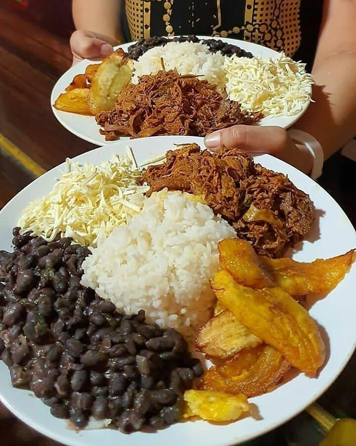
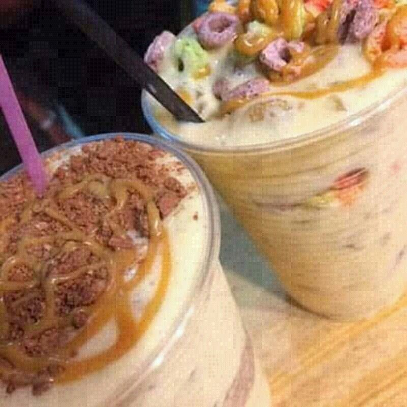

Platos principales
Pabellon Criollo
El pabellón criollo es el plato tradicional de Venezuela. Este plato emblema de la gastronomía venezolana se compone de caraotas negras guisadas (frijoles negros), carne mechada, arroz blanco y plátanos maduros fritos.
Valor: 35,00 Reales
Cachapas

Es un plato típico venezolano muy parecido a las panquecas o a las tortas finas, solo que son hechas de maíz (jojoto) muy tierno molido. Tienen un sabor dulzón y se rellenan casi siempre con mantequilla y con “queso de mano”.
Valores:
- Cachapa con queso 16 reales
- Cachapa con queso y cochino frito: 20 reales
- Cachapa con queso y Carne mechada 22 reales
Patacon
El patacón es un platillo venezolano que consiste en tostones hechos con plátanos verdes triturados y frito; En cuanto al relleno.... es súper variado. El más popular viene con lechuga, tomate, cebolla, queso, carne mechada y salsas.
Valor: 25,00 Reales
Empanadas

Las empanadas venezolanas son unos pasteles en forma de media luna, se elaboran a base de harina de maíz -que las hace distintivas de otros tipos de empanadas- y cualquier tipo de relleno que aguante una fritura. Podemos decir que son las hermanas de las arepas.
Valores
- Empanada de queso: 6 reales
- Empanada de queso y jamon 8 reales
- Empanada de Pollo: 10 Reales
- Empanada de Carne mechada 12 reales
Arepas
La arepa es más que un alimento básico de una comunidad; es un símbolo de identidad. La palabra arepa significa ‘maíz’, ingrediente básico en la preparación de este plato. Así, podemos decir que la arepa es la comida típica venezolana. Se consume como plato principal o como acompañante, cada día, en el desayuno o en la cena. Los rellenos venezolanos de las arepas van desde mantequilla, pasando por quesos, embutidos, jamón, mortadela, aguacate, huevo, frijoles, atún, guisos de pollo, carne o pescado y hasta de mariscos.
Reina pepiada Esta deliciosa arepa venezolana lleva un relleno de pollo con aguacate.
Valor: 16 reales
Domino Esta arepa tiene un relleno de Caraotas Negras con Queso Blanco Duro Rallado.
Valor: 18 reales

Pelua carne mechada siempre ha sido bastante popular en las tostaderías, y, su combinación con queso amarillo es de las más solicitadas.
Lleva ese nombre por las hebras de carne y de queso que parecieran agregarle cabellera a la arepa.
Valor: 18 reales
Postres
Golfeados
El golfeado es un pan dulce típico de la gastronomía venezolana, es una masa enrollada en forma de caracol, con papelón, queso rallado y anís. Ideales para desayunos, meriendas y postres acompañados con queso de mano.
Valor: 10,00 Reales
Dulce de Lechoza
El dulce de lechosa se prepara con mucha frecuencia para Navidad, consiste en pedazos finos de lechosa, se cocina lentamente con azucar, bicarbonato, clavitos, entre otros, y al estar cristalino se conserva en frascos de vidrio, un dulce de lechosa sirve de exquisito regalo, de postre, de merienda al atardecer. Sus tajadas cristalinas siempre serán un mágico encuentro con la dulcería criolla venezolana.
Valor: 10,00 Reales la porción.
35,00 reales kg.
Torta de Pan
La torta de pan es un postre tradicional que endulza la vida cotidiana del venezolano de sencilla preparación y muy deseada por todos los integrantes de la familia,El postre se elabora mezclando pan viejo con ingredientes como leche, huevos, azúcar, vainilla y a veces, para darle un toque especial, se añade queso blanco fresco, que da como resultado una textura cremosa y un sabor distintivo. Algunas versiones pueden incluir ron, lo que le da un toque adicional de sabor.
Valor: 6,00 reales la porción.
25 reales kg.
Mandoca
Las mandocas son unas frituras elaboradas con plátano maduro, harina de maíz, queso blanco, papelón y semillas de anís, ingredientes muy básicos y recurrentes en la gastronomía venezolana. Se modelan de forma ovalada, como el pétalo de una flor.
Valor: 12,00 Reales la porción.
35,00 reales kg.
Bebidas
Chicha
La chicha criolla, chicha venezolana o simplemente chicha es una bebida dulce no alcohólica de Venezuela hecha principalmente a base de arroz o sémola de trigo —entre otros ingredientes de base— y leche de vaca, a la que suele agregársele leche condensada, canela, chispas de chocolate o Sirope.
Valor: 8,00 Reales vaso
30 reales jarra
Tizana
La tizana es una bebida típica de la gastronomía venezolana que consiste en varias frutas cortadas en pedazos, las cuales suelen venir mezcladas con "zumo" o "jugo" de naranja, de sandía o granadina, esta última le da una característica tonalidad rojiza.
Valor: 10,00 Reales vaso
30 reales jarra
Malta
Es una bebida de malta carbonatada venezolana que no contiene alcohol. Se elabora con agua, cebada malteada, caramelo o maíz y gas carbónico, que es aquello que le proporciona las burbujas a la bebida.
Valor: 10,00 Reales lata de 350ml
30 reales 1 litro